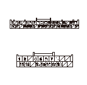
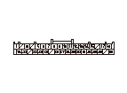
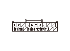
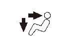

オート エア コンディショナ症状別故障診断 - NAV.音声認識故障診断
NAV.音声認識故障診断
オートA/Cコントロール ユニットの作動点検
1-1
スイッチによる操作で作動を確認する
◆ 正常に作動するか
YES
-
ステップ
2
へ進む
NO
-
HDS
または
オートA/Cコントロール ユニットで自己診断
を行う
NAV.システムの画面診断
2-1
NAV.システム接続診断機能でシステム接続診断を行う
◆ マイクおよびオートA/Cコントロール ユニットは接続されているか
YES
-
AVNユニット カプラB（20P）の接続を外し、ステップ
5
へ進む
NO
-
ステップ
3
へ進む
オートA/Cコントロール ユニットとAVNユニット間の断線点検
3-1
イグニッション スイッチをOFFにする
3-2
オートA/Cコントロール ユニット36Pカプラの接続を外す
3-3
AVNユニット カプラB（20P）の接続を外す
3-4
オートA/Cコントロール ユニット36PカプラとAVNユニット カプラB（20P）の端子間の導通を点検する
36Pカプラ
20Pカプラ
No.31端子
No.8端子
No.32端子
No.18端子
No.33端子
No.17端子
◆ 導通があるか
YES
-
ステップ
4
へ進む
NO
-
オートA/Cコントロール ユニットとAVNユニット間のコードの断線

オートA/Cコントロール ユニットとAVNユニット間の短絡点検
4-1
オートA/Cコントロール ユニット36PカプラのNo.31、No.32、No.33各端子とボディ アース間の導通を点検する
◆ 導通があるか
YES
-
オートA/Cコントロール ユニットとAVNユニット間のコードの短絡
NO
-
ステップ
5
へ進む

オートA/Cコントロール ユニット通信回路の点検
5-1
オートA/Cコントロール ユニット36Pカプラを接続する
5-2
AVNユニットカプラB（20P）のNo.8、No.17、No.18端子間をジャンパ ワイヤで短絡させる
5-3
イグニッション スイッチをON（
II
）にする
5-4
AUTOスイッチを押したままON/OFFスイッチを同時に押す
◆ VENTとHEATインジケータ（矢印）が両方点灯するか
YES
-
AVNユニット診断を行う
NO
-
良品のオートA/Cコントロール ユニットに交換し
、再度点検する

